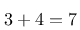
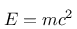
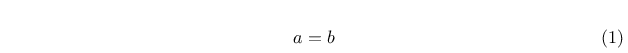
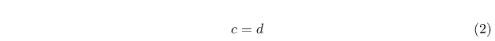
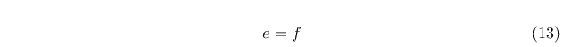

Updates
- 28. Juni 2013
- 6. Juli 2013
- 16. Juli 2013
- 24. August 2013
- 19. Oktober 2013
- 3. November 2013
- 22. Dezember 2013
- 30. Dezember 2013
- 30. Januar 2014
- 1. Juli 2014
- 20. Oktober 2014
- 22. Dezember 2014
- 3. Februar 2016
- 4. Oktober 2018
- 5. September 2019
- 1. September 2020
- 14. März 2021
- 4. November 2021
- 25. Juli 2022
Ich habe nach einer Möglichkeit gesucht, meine eigene Webseite zu gestalten. Nach einiger Überlegung und ein paar Versuchen mußte ich feststellen, daß ich mich mit keiner der ausprobierten Varianten glücklich fühlte - also ran ans Zeichenbrett und was eigenes geschaffen!
Inspirieren ließ ich mich von dieser Webseite, unter der das schöne Motto prangt: "Proudly made without PHP, Java, Perl, MySQL and Postgres" Das fasst hevorragend zusammen, was auch mich umtrieb. Nur - HTML von Hand schreiben ist etwas, das ich noch nie gerne getan habe. Dazu kommt noch, daß es dort keine (mir bekannte) vernünftige Form von include gibt. Das bedeutet, daß wenn sich das Menü ändert, jede einzelne Seite wieder angefasst werden muss. Das hatte ich in der Anfangszeit unserer ehemaligen Firma schon einmal und habe mir damals geschworen: "Nie wieder!"
Daher erinnerte ich mich an etwas, das ich ganz am Anfang meiner Berufsausbildung kennenlernen durfte: Damals - es war kurz nach der Wende - war alles, was fortschrittliche EDV war, noch neu für uns: die Abteilung, in der ich lernte, hatte einen PC und darauf war eine Textverarbeitung installiert. Wie sie hieß, weiß ich heute nicht mehr - ich weiß nur noch, daß es dort sogenannte "Punkt-Befehle" gab. Aus heutiger Sicht würde man das Markup nennen. Marketingsprech wäre wahrscheinlich "Domain-Specific-Language"
Also entschloß ich mich zu folgender Lösung: Die Artikel werden in einfachen Textdateien geschrieben - sie dürfen HTML-Markup enthalten, müssen aber nicht. Es existiert eine Handvoll Punkt-Befehle, die die Struktur des Dokuments definieren. Dazu existiert ein Programm, das diese Dokumente einliest und über Velocity-Templates die HTML-Seiten erzeugt. Die HTML-Seiten werden als letzter Teil des Erzeugungsprozesses schließlich mit den Bildern, CSS- und JavaScript-Dateien und sonstigen Ressourcen in ein Verzeichnis geschrieben, das ohne weitere Änderungen direkt auf einen HTTP-Server kopiert werden kann.
Das, was dabei herausgekommen ist, sehen Sie gerade vor sich. Das System unterstützt das Taggen der Artikel, eine zeitliche Übersicht nach Monaten oder Kalenderwochen und eine Gruppierung der Artikel nach Tags. Es existiert die Möglichkeit, Artikel als zukünftig zu markieren - damit tauchen nur Titel und Abstrakt in der Webseite auf, der Inhalt bleibt noch verborgen.
Aktualisierung vom 28. Juni 2013
Als neue Punkt-Befehle wurden zwei Erweiterungen implementiert: einerseits ist es nun möglich geworden, Dateien zu includieren - das bedeutet, daß man nach dem entsprechenden Befehl einen Dateinamen relativ zu dem Verzeichnis des Artikels, der die Direktive enthält angibt. Dann wird diese Direktive im Ergebnis unterdrückt und statt dessen der Inhalt der referenzierten Datei eingefügt. Das funktioniert auch hierarchisch (Artikel1 includiert Artikel2, der wiederum includiert Artikel3 ...) Weiterhin wurde eine neue Direktive geschaffen, die verhindert daß der Artikel, in dem sie auftaucht, Teil der Webseite wird.
Aktualisierung vom 6. Juli 2013
Aktualisierung vom 16. Juli 2013
Aktualisierung vom 24. August 2013
Aktualisierung vom 19. Oktober 2013
Aktualisierung vom 3. November 2013
Aktualisierung vom 22. Dezember 2013
Aktualisierung vom 30. Dezember 2013
Links, die auf diese Weise definiert werden, werden nicht im Fließtext der erzeugten Seite integriert, sondern stehen zum Zeitpunkt der Expansion des Templates für Artikel als Collection (Liste) zur Verfügung, so daß sie gemeinschaftlich formatiert werden können.
Aktualisierung vom 30. Januar 2014
Zwischen den einzelnen Direktiven für Seitenumbrüche dürfen alle Direktiven stehen, die in den Artikeln auch sonst erlaubt sind. Folgende Direktiven bilden eine Ausnahme - sie sind nur einmal im Dokument erlaubt und beziehen sich immer auf den Artikel als Ganzes:
- .TAGS
- .CREATED
- .PUBLISHED
- .FUTURE
- .HIDDEN
- .URL
Aktualisierung vom 1. Juli 2014


Dazu fügt man einfach den betreffenden TeX-Code zwischen .FORMULA und .FORMULAEND ein (nur die Mathematik, ohne Dokumentenstruktur) - Beispiel:.formula E=mc^2 .formulaend
Aktualisierung vom 20. Oktober 2014
Aktualisierung vom 22. Dezember 2014
Aktualisierung vom 3. Februar 2016
Aktualisierung vom 4. Oktober 2018
- Für jedes Tag ist nun sofort erkennbar, wie vieel Artikel sich mit dem jeweilgen Thema beschäftigen (ok, das war wohl eher für mein Ego...)
- Jeder Artikel gibt ab sofort darüber Auskunft, welche anderen Artikel zu ihm verlinken - das Ganze natürlich navigierbar und die Artikel sind nach ihrem Erscheinungsdatum geordnet - der Neueste steht in der Liste ganz oben!
Aktualisierung vom 5. September 2019
- mdbold
- {font-weight: bold;}
- mdcode
- {font-family: monospace;}
- mditalics
- {font-style: italic;}
Aktualisierung vom 14. März 2021
Man kann in Artikeln nunmehr Ankerpunkte definieren, die es erlauben, per .link nicht mehr nur auf andere Artikel zu verweisen, sondern auf Ankerpunkte darin - damit ist es möglich, noch zielgenauere Querverweise zu etablieren.
Man kann in Artikeln nunmehr auch custom CSS und Javascript-Ressourcen angeben. Damit kann ein Autor Aussehen und Verhalten einzelner Artikel anpassen. Als erste Demonstration wurde die Integration von asciinema-Screencasts gewählt - damit ist es nun möglich, etwa durch Integration der folgenden Zeilen
.css resources/asciinema/asciinema-player.css
.js resources/asciinema/asciinema-player.js
asciinema-Player wie folgt in Artikel einzubinden:
<asciinema-player src="resources/asciinema/demo.js"></asciinema-player>
Aktualisierung vom 14. März 2021


Dazu ist der Start der Formel um den Vorgänger der gewünschten Nummer zu ergänzen. .formula 12 ergibt also:
Aktualisierung vom 4. November 2021
Aktualisierung vom 25. Juli 2022


Artikel, die hierher verlinken
Static Site Generator für Docbook
15.03.2022
Mein eigener Static Site Generator hat jetzt einen Modus, der es gestattet, die Inhalte nicht nur als HTML-Seiten für die Publikation mittels eines HTTP-Servers zu erzeugen, sondern auch als Docbook zur Erzeugung eines PDF-Dokumentes oder E-Book im Format EPUB.
EBCMS threaded und mit mehr Markdown-Unterstützung
11.01.2022
Mein eigener Static Site Generator hat in den letzten Wochen einige größere Umbauten erfahren
CI/CD Pipelines für DocBook-Dokumentationen
28.12.2021
Nachdem ich neulich die Handbücher für die Anwendungen dWb+ und EBCMS sowie für das Framework dmcc, das beispielsweise im Aviator und auch in dWb+ zum Einsatz kommt auf Gitlab veröffentlicht habe, habe ich entsprechende CI/CD Pipelines eingerichtet, die dafür sorgen, dass die aktuelle Version der jeweiligen Handbücher immer als PDF und EPUB abgerufen werden kann.
Asciinema in Markdown
20.12.2021
Mein Static Site Generator kann ja bereits seit einiger Zeit mit Asciinema-Dateien umgehen und diese einbinden - ich war aber auf der Suche, diese Einbindung auch in Gitlab und/oder Github nutzen zu können...
Dokumentation wird Open Source
04.11.2021
Ich habe im Zuge der Aktualisierung der Dokumentation für meinen Static Site Generator dessen Dokumentation wie auch die für dWb+ und Aviator unter der bekannten Lizenz als Open Source auf Gitlab zur Verfügung gestellt.
Rendern von TeX-Formeln
27.09.2020
Mein selbst geschriebenes CMS bietet schon länger die Möglichkeit, TeX-Formeln zu Illustrationszwecken zu rendern und in Artikel einzubinden. Nachdem ich in einem meiner Projekte die Möglichkeit in GitLab eingebaut habe, habe ich nun beschlossen, die zugrundeliegende Technik etwas zu verfeinern.
Sitemap mittels Graphviz
06.07.2019
Ich habe mein System zur Erzeugung der Webseite um die Erstellung einer Sitemap als Graph erweitert
Änderungen im Datumsformat von Java - schon wieder!
25.02.2018
Ich habe bereits über einen Bug in Java9 berichtet, der mich ziemlich überrascht hat. Wer aber beschreibt meine Überraschung, dass der Bug, der mich beim Umstieg von Java7 auf Java8 bereits angespuckt hat, wieder Speichel gesammelt hat?
Änderungen im Datumsformat von Java
17.09.2017
Zwischen Java7 und Java8 haben sich einige Dinge geändert - viele davon wurden beschrieben und diskutiert. Ich bin heute an einer völlig unerwarteten Stelle von einer solchen Änderung angespuckt worden, die mich zunächst mal sprachlos machte:
Ant erweitern mittels Javascript
15.02.2015
Wie man Ant einfach erweitern kann, ohne wirklich Erweiterungen erstellen zu müssen...
Reader Mode enabled
18.08.2013
Seit ich das Offline Content Management System, mit dem diese Website verwaltet wird so weit hatte, daß ich zum ersten Mal die Ergebnisse im Browser betrachten konnte, saß ein Stachel in meinem Fleisch: auf Android konnte ich nicht in den Reader Mode schalten. Das habe ich nun geändert.


Vor 5 Jahren hier im Blog
-
35c3 - Meine Favoriten bisher
30.12.2018
Wie jedes Jahr habe ich auch diesmal wieder die Vorträge des 35c3 genossen - ich habe nicht alle gesehen, aber das hier ist die Auswahl meiner Favoriten aus denen, die ich gesehen habe:
Weiterlesen...
Tags
Android Basteln C und C++ Chaos Datenbanken Docker dWb+ ESP Wifi Garten Geo Git(lab|hub) Go GUI Gui Hardware Java Jupyter Komponenten Links Linux Markdown Markup Music Numerik PKI-X.509-CA Python QBrowser Rants Raspi Revisited Security Software-Test sQLshell TeleGrafana Verschiedenes Video Virtualisierung Windows Upcoming...
Neueste Artikel
- Migration weg von Repsy
Ich habe Repsy verlassen.
Weiterlesen... - In eigener Sache mit Blick auf 2024
Dieses Jahr ist auch wieder rum. Zeit, nach vorne und Zurück zu blicken...
Weiterlesen... - 37c3 - Empfehlungen
Wow - es ist vier Jahre her, seitdem ich dieses Thema beackert habe. Aber endlich ist es wieder so weit: Meine Empfehlungen für Vorträge vom Chaos Communication Congress 2023 - vulgo: 37c3:
Weiterlesen...
Manche nennen es Blog, manche Web-Seite - ich schreibe hier hin und wieder über meine Erlebnisse, Rückschläge und Erleuchtungen bei meinen Hobbies.
Wer daran teilhaben und eventuell sogar davon profitieren möchte, muß damit leben, daß ich hin und wieder kleine Ausflüge in Bereiche mache, die nichts mit IT, Administration oder Softwareentwicklung zu tun haben.
Ich wünsche allen Lesern viel Spaß und hin und wieder einen kleinen AHA!-Effekt...
PS: Meine öffentlichen GitHub-Repositories findet man hier - meine öffentlichen GitLab-Repositories finden sich dagegen hier.